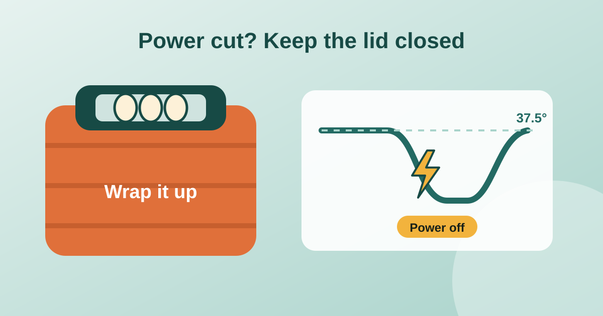

Incubator power outage: how long can eggs survive without heat, and what to do

Eggs in an incubator often survive a power outage of several hours: the embryos slow down as they cool and usually carry on once the heat returns, with the hatch a little later than planned. How well they come through depends on how long the power is off, how cold the room gets and how far along the eggs are. Keep the lid closed, keep the heat in, and don't overcorrect when the power comes back.
What happens to the eggs when the incubator loses power
Development slows, then pauses. A cooled embryo grows more slowly instead of dying straight away. A broody hen leaves her eggs to eat and drink every day, and the eggs cool a little each time.
The room temperature sets the pace. In a warm room the eggs lose heat slowly. In a cold garage or shed they cool much faster.
Cooling is less risky than overheating. Most hatchers find that a few hours too cool does less harm than a few hours too hot.
There is no exact number of hours that is safe. Many keepers report good hatches after outages of several hours, and some eggs survive longer, but losses rise the longer and colder the outage is.
What to do during the outage
Keep the lid closed. Every time you open it, warm air and humidity escape.
Insulate it. Wrap the incubator in blankets, towels or a duvet. Leave the vent holes free if the outage is short; for a long one, covering most of the box keeps more heat in.
Move it somewhere warm, gently. A warm room helps, but carry it level and slowly. Don't move it during lockdown unless the room is very cold.
Add gentle heat for long outages. Bottles of warm (not boiling) water wrapped in a towel, placed in the incubator away from the eggs, slow the cooling. Never put a heat source against the eggs.
Use backup power if you have it. A portable power station, a UPS or an inverter can run many small incubators for hours.
Write down the times. Note when the power went off and came back. You will need it to judge the hatch date.
What to do when the power comes back
Let it warm up on its own. Leave the thermostat at its normal setting. Turning it up to "make up" for lost time risks overheating, which is worse than the outage.
Check with a separate thermometer. Make sure temperature and humidity return to the right values for today. Our incubator humidity guide and incubation chart list them by species.
Candle 3 to 4 days later. Compare with your last candling: growing veins and movement mean the embryo is still alive. Our candling guide shows what to look for.
Expect a later hatch
A cooled embryo loses development time, so after a long outage the hatch often comes a day or so late. Keep lockdown conditions, don't open the incubator early and give the eggs a couple of extra days past the expected date before deciding they won't hatch. If they still don't hatch, our guide to why eggs don't hatch helps you work out whether the outage or something else was the cause.
Prevent the next one
Run the incubator from a UPS or power station if outages are common where you live.
Keep it in a room with a steady temperature, away from windows and doors.
Keep blankets and a spare thermometer nearby during every hatch.
Log temperature and humidity, so you can see later how long the eggs were cool.
Keep track of the hatch
Hatch Day shows today's temperature and humidity targets for 11 species, reminds you to turn the eggs, candle and start lockdown, and counts down to hatch day. Hatch Day Pro adds a temperature and humidity log, where you can record an outage and see it next to your readings, plus a candling log to compare embryos before and after. The free hatch date calculator works out the expected day from your set date. More guides are in egg incubation.
Frequently asked questions
How long can fertile eggs survive without heat in an incubator?
There is no fixed limit. Embryos slow or pause their development when they cool, and many keepers report good hatches after outages of several hours. Survival depends on how long the power was off, how cold the room got and how far along the embryos are, so candle a few days later to see which eggs are still developing.
Should I open the incubator during a power cut?
No. Keep the lid closed so the eggs lose heat as slowly as possible, wrap the incubator in blankets or towels and move it to the warmest room if you can do so without jolting it.
Will a power outage delay the hatch?
Often, yes. Cooled embryos develop more slowly, so the hatch can come a day or so late after a long outage. Keep lockdown conditions and wait a couple of extra days before deciding the eggs will not hatch.
Is overheating worse than cooling?
Usually, yes. Embryos tolerate a few hours of cooling better than a few hours of overheating. When the power returns, let the incubator come back to its normal setting instead of turning the temperature up to make up for lost time.
A pipped egg can sit for a day without any visible change, and that is usually normal. Here is what happens between pip and hatch, how long each stage takes and when helping is worth the risk.
Set hatching eggs within 7 days of laying. Keep them pointed end down at 13 to 16 °C (55 to 60 °F), turn them once a day after the first few days and let them warm up before they go in.
Stop turning eggs three days before they are due: day 18 for chickens, day 25 for ducks, day 14 for Coturnix quail. Raise the humidity, keep the lid shut and wait.